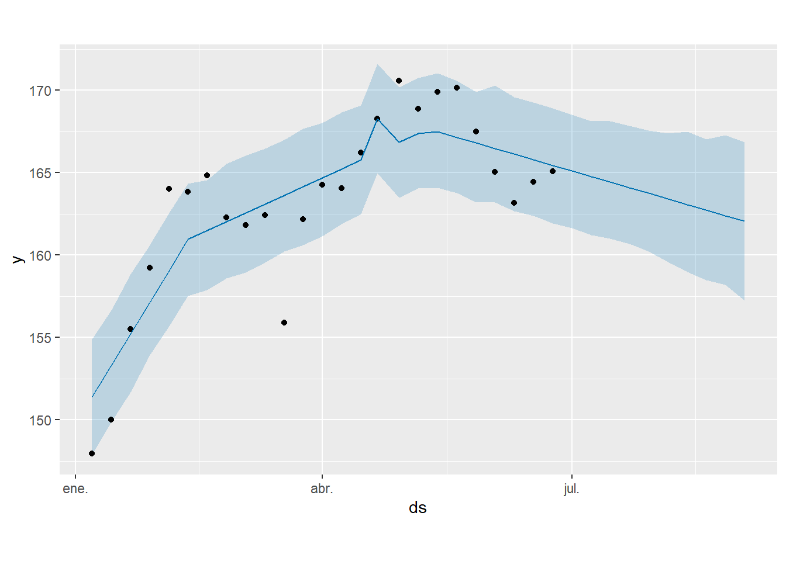
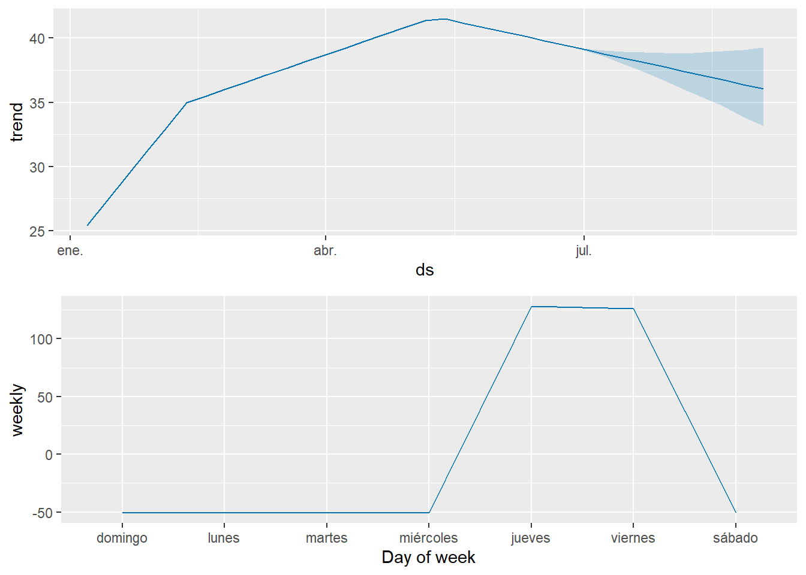

9 Modelo Facebook’s Prophet
9.1 Preparación de la serie temporal
Prophet requiere que los datos tengan dos columnas: ds para la fecha y y para el valor a predecir.
9.2 Ajuste del modelo Prophet
## Disabling yearly seasonality. Run prophet with yearly.seasonality=TRUE to override this.## Disabling daily seasonality. Run prophet with daily.seasonality=TRUE to override this.## n.changepoints greater than number of observations. Using 19# Crear un dataframe para futuros valores a predecir
future <- make_future_dataframe(prophet_model, periods = 10, freq = 'week')
# Hacer las predicciones
forecast <- predict(prophet_model, future)
# Visualizar el pronóstico
plot(prophet_model, forecast)

Predicción a Futuro: El modelo proyecta una continuación de la tendencia a la baja con un intervalo de confianza que se amplía a medida que avanza el tiempo, lo que refleja la creciente incertidumbre en las predicciones futuras.
Patrón Semanal: Hay un patrón claro de variación en los precios a lo largo de la semana. Los precios tienden a ser más bajos al inicio de la semana (domingo, lunes y martes), alcanzan su punto más alto a mitad de semana (miércoles, jueves y viernes), y vuelven a bajar hacia el fin de semana (sábado).
Implicaciones: Este patrón sugiere que hay ciertos días de la semana donde la actividad en el mercado o las decisiones de inversión tienen un impacto mayor en los precios. Esto puede ser útil para los traders que buscan optimizar sus estrategias de entrada y salida.
Ajustes del Modelo: unque el modelo Prophet ha capturado la tendencia general y la estacionalidad semanal, sería beneficioso incluir más datos históricos y considerar otros factores externos, como eventos macroeconómicos o cambios en la empresa IBM, para mejorar la precisión del modelo.
Estrategias de Trading: Los traders pueden considerar la estacionalidad semanal al planificar sus estrategias de compra y venta. Por ejemplo, podrían optar por vender en los días con precios más altos y comprar en los días con precios más bajos.